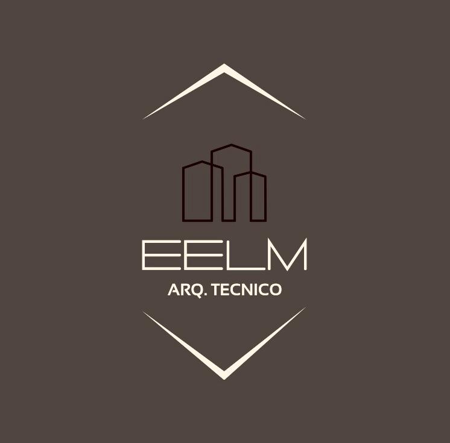
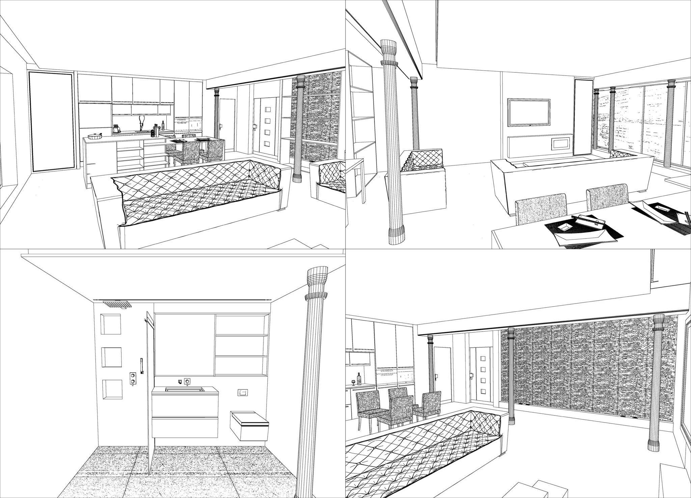
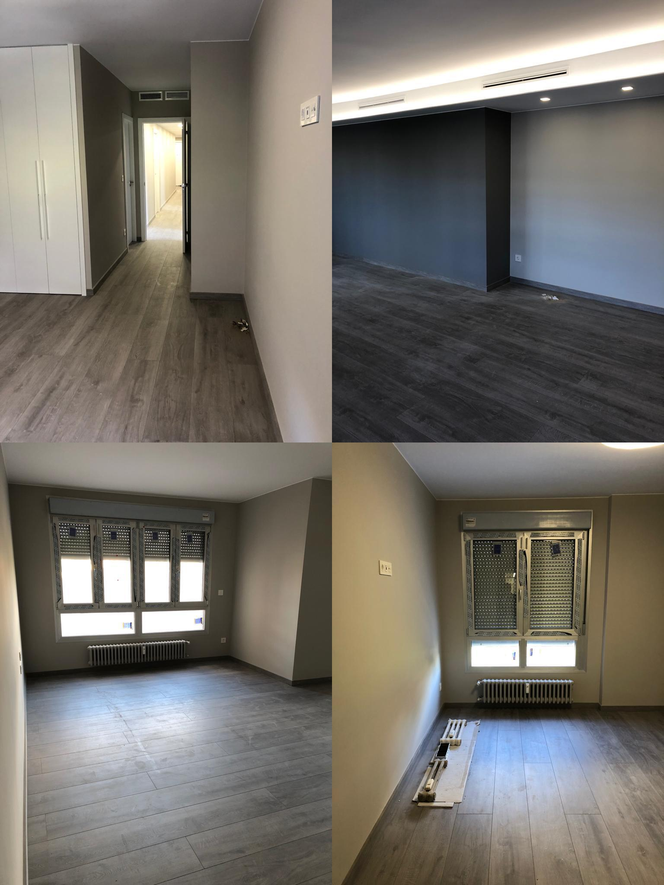
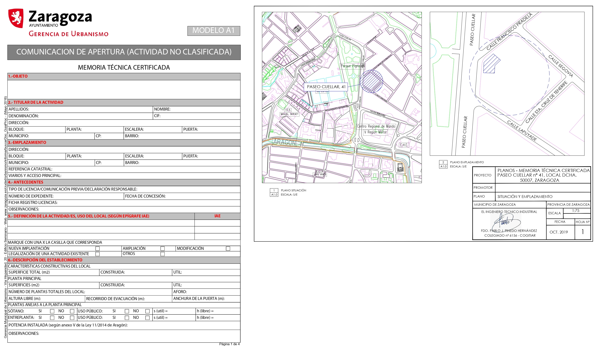

|

|
STUDIO DE ARQUITECTURA Y DISEÑO
|
|
|
|
|
|
|
SERVICIOS
Nuestro trabajo se realiza con el más meticuloso cuidado y dando antención a los pequeños detalles.
Los servicios que ofrecemos son las siguientes
DISEÑO DE INTERIORESREFORMAS Y CONSTRUCCIÓNLICENCIAS
|
|
DISEÑOS
Nuestro objetivo es satisfacer las necesidades de espacios habitables para usted, tanto en lo estético como en
lo tecnológico. Haga luz a la imaginación y comuniquenos sus sueños para empezar el diseño.
Realizamos un estudio del espacio a trabajar, distribución e iluminación para la completa realización de su idea. Además
proporcionamos diversas opciones de fabricacion de moviliario para la decoración de interiores.
¿Qué conlleva?
- Reportaje fotográfico con un equipo especializado.
- Toma de medidas del espacio utizando el metro-láser.
- Planificación y cálculo de un presupuesto
- Asesorammiento en cuanto al estilo y diseño que desee
- Representación gráfica de diversas propuestas en mdelo 3D, Visualizacón de los acabdos con los muebles.
Si desea más información acerca de este servicio, puede visitar la página web de nuestro colaborador.
Pinche aqui
|

|
|

|
REFORMAS Y CONSTRUCCIÓN
Elaboramos todo tipo de proyectos técnicos relacionados con la construcción en los sectores industrial, residencial y terciario, apoyando
todo en nuestros conocimientos y experiencia. Nuestro equipo esta totalmente capacitado para la realización de pequeños cambios
estructurales o reformas completas. Para la realización de este proceso, nosotros nos encargamos de lo siguiente:
¿Qué hacemos?
- Proporcionamos una gestión de obras en viviendas, naves y locales omerciales
- Petiión de presupuestos, permisos y licenias
- Un exhaustivo control de calidad y gestión documental
- Coordinación de los equipos de trabajo
- Planificación, progrmación y control de los plazos
|
|
|
LICCENCIAS
Las licencias son permisos requeridos para la realización de cualquuier tipo de construcción. Su propósito es controlar
el crecimiento de las ciudades y velar por su seguridad tanto personal como económica. Aseguran que las construcciones sean debidamente reglamentadas.
Nuestro trabajo consiste en la elaoración de planos de esdificación para garantizar que la vivienda sea segura. Del mismo modo nos encargamos de la
elaboración de todo de licencias.
- Licencia de obra
- Licencia de apertura
- Licencia de ocupación de acera
- Licencia de obra mayor o menor
- Licencias actiaidad clasificada
|

|
{kind=link}
{kind=link}
{kind=link}